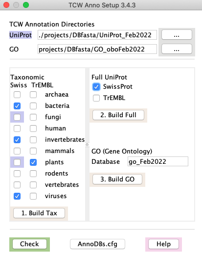
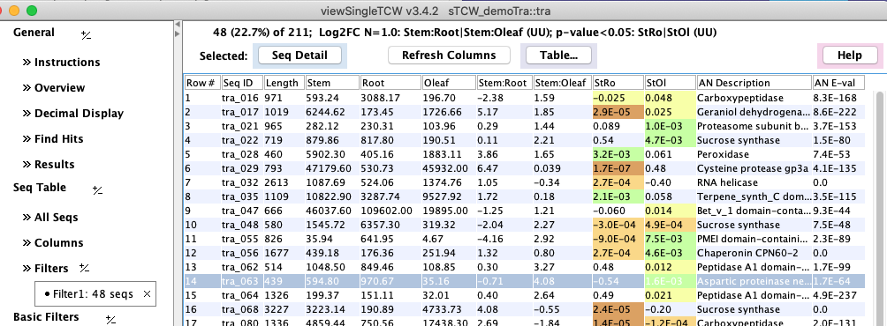
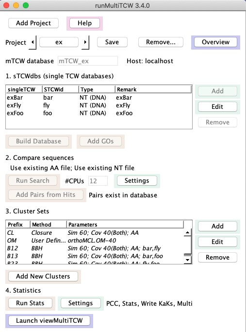
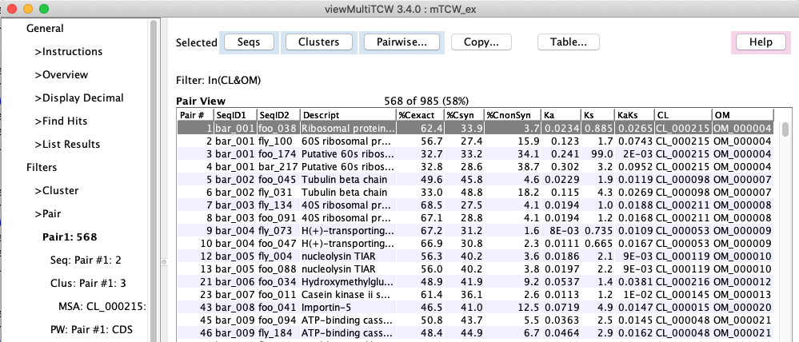

|
TCW provides two sets of programs: singleTCW for annotating and viewing
single species transcriptions, and multiTCW for
annotating and viewing comparative transcripts.
Programs
singleTCW contains four major programs:
1. runAS -- annotation setup for input to runSingleTCW
- Downloads the UniProt taxonomic and/or full SwissProt and TrEMBL .dat files
- Create fasta files from .dat files for searching against TCW sequences
- Download the GO go-basic.obo file, creates a mySQL GO database from its contents,
and augments the database with UniProt information about GO, KEGG, Pfam, and InterPro
Note: runSingleTCW can take as input other databases such as Genbank nr,
but these results will not have associated GO annotations.
|

|
2. runSingleTCW -- builds a single-species TCW database (sTCWdb)
- Input: sequences and optional counts, where any of the following are valid (
the first three are NT-sTCWdbs and the last is a AA-sTCWdb):
- Load RNA-seq transcripts and count data with optional replicates.
- Load sequences with location information (e.g. predicted genes).
- Assemble up to ~1M sequences, such as: transcript sets,
paired-end Sanger ESTs, or a mix of transcripts and ESTs.
- Load protein sequences and spectra (count) data with optional replicates.
- Annotation:
- Annotate sequences with one or more nucleotide or protein databases (called annoDBs).
UniProt should be downloaded with the runAS program. The searching may be done with
the super-fast
DIAMOND or the standard BLAST.
- If UniProt is used, GO annotations along with EC, KEGG and Pfam identifiers are extracted
from the GO database and entered into the sTCWdb (The GO database is set up with the runAS).
- Compute ORFS and GC content.
- All data and results are stored in a MySQL database.
| 
|
3. runDE -- add DE to a sTCWdb created with runSingleTCW
- An interface to several R packages (EdgeR, DESeq) for calculating differential
of sequences. Additionally, it can execute a user-provided R script for DE calculation.
- If the sTCWdb contains GOs, the GOseq R program can be used to compute differential GO terms.
| 
|
4. viewSingleTCW -- view an sTCWdb created by runSingleTCW
- Query and view the results. There are various filters, for example,
filters are provided specific to taxonomic databases, trimmed GOs, filter by annotation, etc.
- The initial view is the Overview, which summarizes the results.
| 
|
multiTCW contains two major programs:
1. runMultiTCW -- builds a multi-species comparison TCW database (mTCWdb)
- Builds a database from multiple sTCWdbs, which can be NT-sTCWdbs, AA-sTCWdbs
or a mix. This has been tested with up to 5 input sTCWdbs.
- Runs DIAMOND or BLAST to compare the sequences from the input TCWs. Add the resulting pairs to the database.
- Clusters the pairs into ortholog groups. They can be clustered with
TCW Closure, TCW BBH (best bi-directional), TCW shared hit, OrthoMCL, and/or user-supplied clusters can be uploaded.
Multiple ortholog clustering can be in the database for query.
- If the input is from two or more NT-sTCWdbs, coding statistics are calculated. Additionally,
alignment files are output for input to KaKs_calculator, and the results of running
the KaKs_calculator are input to runMultiTCW.
- MSA (multiple sequence alignments) are computed for each cluster and scored.
| 
|
2. viewMultiTCW -- view an mTCWdb created by runMultiTCW
- Query and view the results. The results can be filtered on various attributes. A cluster
can be viewed graphically with the results of MAFFT or MUSCLE
MSA or pairwise alignment
(e.g. see graphical views MSA and Pair, respectively).
- The initial view is the Overview, which summarizes the results.
| 
|
| OS | Architecture | Purchased | Database | Java | Test
|
|---|
| 1. | Linux x86.64 (Centos 7) | 3.2 Ghz AMD 24-Core, 128Gb | 2011 | MariaDB v10.4.12 | v1.8 | Build and View
| | 2. | Linux x86.64 (Centos 7) | 2.0 Ghz AMD 4-Core, 20Gb | 2008 | MariaDB v5.5.60 | v1.7 | View
| | 3. | MacOS (Catalina 10.15.4) | 3.2 GHz Intel 6-Core i7, 64Gb | 2020 | MySQL v8.0.17 | v14.0 | Build and View
| | 4. | MacOS (Maverick 10.9.5) | 2.4 Ghz Intel 2-Core i5, 16Gb | 2012 | MySQL v5.6.21 | v1.7 | View
|
singleTCW
The timings were run on the Linux and MacOS of the above machine table (row #1 and #3, respectively).
The "Mb" numbers are maximum memory (when available), and are approximate.
| Task | Count | MacOS 6-Core
| Linux 24-Core
|
|---|
| Load | 64,930 seqs
| 1m:26s
| 20Mb
| 2m:17s
| 19Mb
| | Instantiate | 64,930 seqs
| 47s
| 4Mb
| 1m:16s
| 1Mb
| | Diamond1 | 5G-6G file size
| 12m:09s
| ---
| 11m:54s
| ---
| | Annotate2 | 461,118 unique hits
| 18m:14s
| 2374Mb
| 56m:7s
| 2384Mb
| | ORF | 64,930 ORFs
| 3m:54s
| 150Mb
| 9m:36s
| 246Mb
| | GO | 10,724 GOs
| 28m:42s
| 1030Mb
| 52m:04s
| 1350Mb
|
1Search against TR-plants; The May2020 file (5G) was used on Mac,
and the Oct2020 file (6G) was used on Linux, which influenced the increased times on Linux.
2Add results from SP-plants, TR-plants, and SP-full; times do not include Diamond. Linux had 462,883 unique hits.
multiTCW
Using the same two computers as above, the mTCW database was built from two sTCWdbs, one with
28,392 and the other with 26,685 sequences. Both datasets were annotated with SP-plants, TR-plants, and SP-full,
where the Mac versions were downloaded May2020 and the Linux on Oct2020.
| Task | Count | MacOS 6-Core
| Linux 24-Core
|
|---|
| Build Database | 55,077 seq and 595,698 unique hits1
| 6m:28s
| 150Mb
| 9m:31s
| 152Mb
| | Add GO | 21,693 GOs
| 16m:48s
| 11Mb
| 30m:26s
| 506Mb
| | Add Pairs with Hits | 392,919 AA and 43,485 NT pairs
| 5m:03s
| 61Mb
| 15m:54s
| 68Mb
| | Add 3 cluster sets2 | 22,376 total clusters
| 2m:56s
| 33Mb
| 8m:10s
| 31Mb
| | Run Stats
| | PCC | 410,401 Pairs
| 1m:32s
| 68Mb
| 2m:16s
| 63Mb
| | Pair Stats | 95,628 Pairs to align
| 44m:33s
| 624Mb
| 2h:5m:19s
| 661Mb
| | MSA3 Stats | 22,376 clusters
| 1h:20m:11s
| ---
| 4h:34m:23s
| ---
|
1The Linux database had 606,845 unique hits.
2The methods added were BBH, Closure and BestHit. Closure used the most memory.
3This step uses the external program MAFFT.
The Linux times are much slower than the Mac, even though they comparable architectures; the Linux
may not be optimized well and is a much older machine. It is important with MariaDB to make sure
the variables are set right; execute
./runSingleTCW -v
to print out some variables that seem to effect performance with MariaDB on Linux.
C. Soderlund (2022) Transcriptome computational workbench (TCW):
analysis of single and comparative transcriptomes.
BioRxiv
Describes the TCW v4 package.
C. Soderlund, W. Nelson, M. Willer and D. Gang (2013) TCW: Transcriptome Computational Workbench.
PLOS ONE
Describes the TCW v1 package.
C. Soderlund, E. Johnson, M. Bomhoff, and A. Descour (2009)
PAVE: Program for Assembling and Viewing ESTs.
BMC Genomics
Describes the assembly algorithm.
|


{kind=link}
{kind=link}
{kind=link}
{kind=link}
{kind=link}